Author
Alex Huang,
Computer Science,
Brown University
Project
CSCI1300
Iterative Design Group Project with Ashton Glover, Alexandra Mercedes-Santos, and Hannah Zhang
Tools Used
HTML/CSS, User Research, Figma,
Balsamiq, Loom
Overview:
Pickle AI is an AI clone that lip-syncs to your voice in real time,
replacing your camera feed to make users look professional at all times,
even if they are calling from bed, the couch, or while walking around.
Our goal was to design an interface that made training and using this
model intuitive and trustworthy so that anyone regardless of tech
background can create a high-quality body double that works for them.
The Problem:
In remote-first or hybrid work environments, there's rising pressure to
"show up" professionally on camera—often at the expense of comfort,
flexibility, and mental wellbeing. Pickle AI thus aims to tackle the
growing issue of meeting fatigue, allowing users to maintain a
professional video presence without compromising where or how they
actually speak from. Pickle's users include remote workers, creatives,
educators, students, and anyone who wants to separate how they appear
professionally from where they actually are.
My Contributions:
Since this was a four person group project, not all of the content on this page is work that I specifically did. My specific contributions were:
- The second set of sketches that include the configuration, control pane, and setup screens
- Login screens for Lo-Fi and Hi-Fi Prototypes
- Research into the Pickle product for Loom video introduction
- Conducted user research for Hi-Fi prototype
- Demo of login and user profile screens
Sketches and Wireframe
-
After reviewing the company and its goals, we sat down and came up with
sketches of what we imagined the interface would look like
-
Two of us chose to focus more on the product, while the other two
focused more on the web design for the product
- Our initial sketches can be seen below:
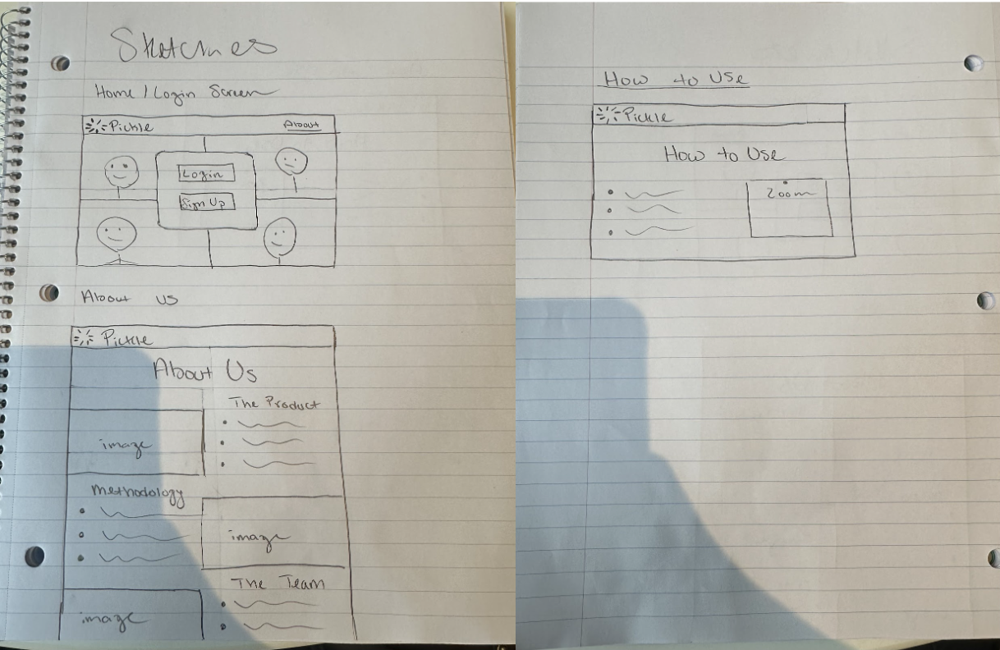
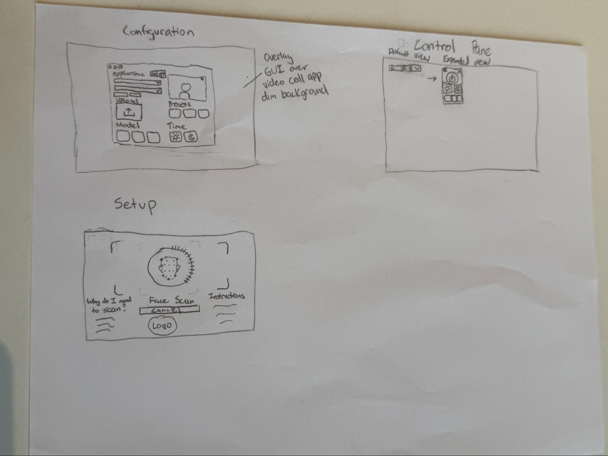
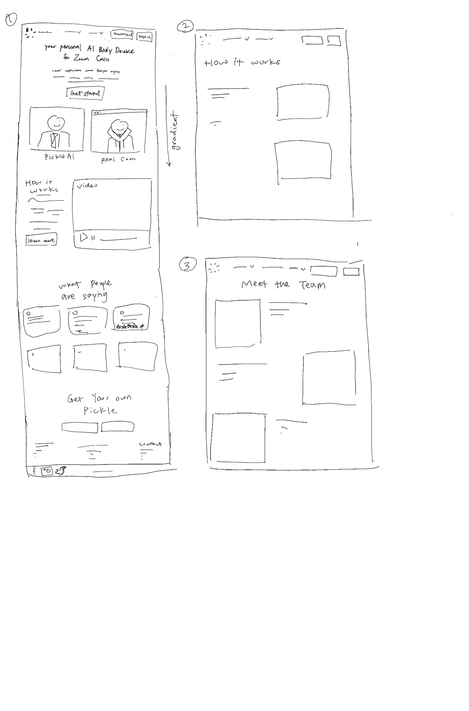
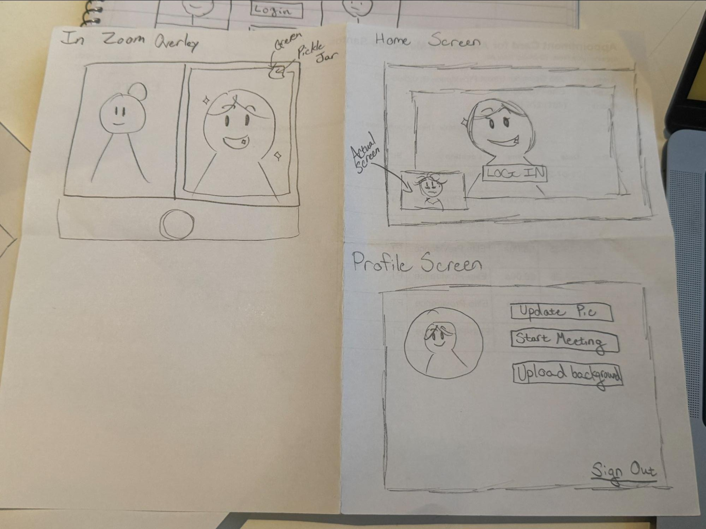
-
After sitting down as a group and reviewing our sketches, we came up
with an initial wireframe for 3 main screens using Balsamiq:
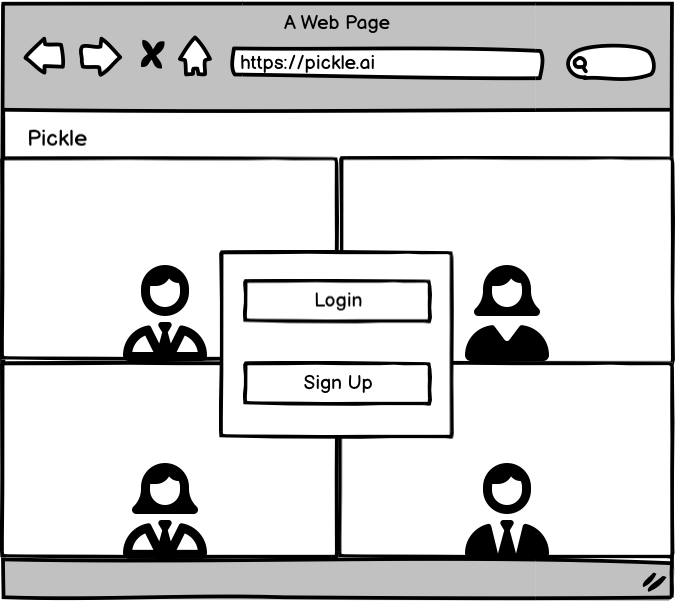
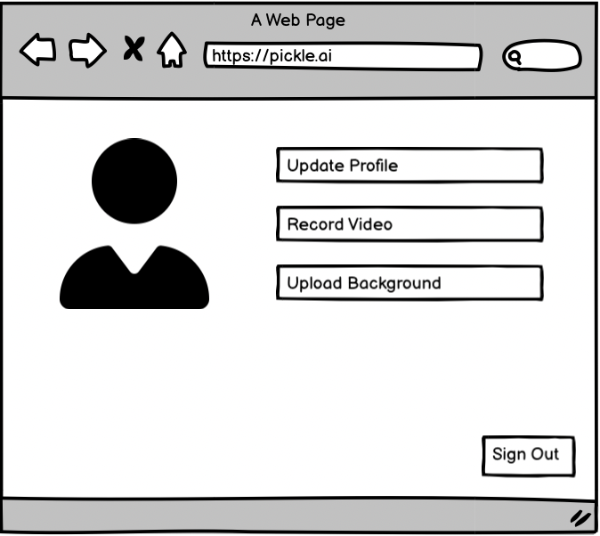
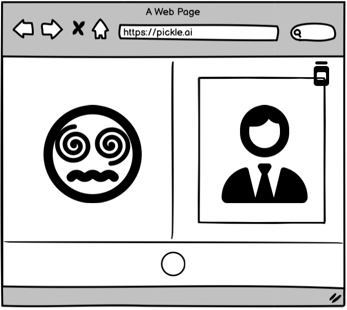
-
We tried to aim for a minimalistic design that focused more on the
usability side
-
We wanted to highlight the key screens that users would interact with,
so we chose to model the login screen and the screen where the user
chose the video that would be fed to the Pickle AI to replace their
camera
-
Furthermore, we chose to represent a preview screen which depicts the
live camera view of yourself as well as the AI version
-
We felt that these three screens represented the key functionalities and
points of user interaction for Pickle, so we wanted to focus our
attention on these
-
For a more detailed description of our sketches and wireframe, we
recorded a Loom video linked here:
https://www.loom.com/share/c8640ee5afb64705b1cfa858ef67e8ab?sid=c3c4b92e-0574-445c-bbd3-c3a4d04a015f
Wireframe Feedback and Iteration
As we all know, Lo-Fi prototypes are rarely ready to be user-facing. No
design process is complete without getting feedback from an outside party.
Thus, we went to receive feedback from someone familiar with good design,
a TA of our interaction design course. During our wireframe critique, we
received valuable and actionable feedback that helped us refine both the
clarity of our user flows and the interactivity within the interface.
Feedback we received:
-
More detail for how users can interact with each button on the profile
screen.
-
Add more screens, as it was unclear what the whole flow was from the 3
wireframed screens.
- Suggested a loading screen while the model was training.
-
It was unclear if there were any requirements when the user submitted or
recorded a video.
-
Suggested an actual preview screen that also provides sliders to allow
users to change aspects of the AI model that would be shown during
meetings.
-
Be imaginative, the features of the app don't actually have to exist, we
don't want you to look at the actual product.
We addressed these items as we began to develop our final Hi-Fi Prototype.
Our Lo-Fi prototype had almost no features, since we weren't clear on how
the product actually works. We were told that the features in our
prototype didn't actually have to exist, which then resulted in more user
flows in our Hi-Fi. The model progress screen and appearance sliders
stemmed directly from the feedback we received. They were features that we
thought fit the startup's vision, but didn't know for sure if they
existed.
Hi-Fi Prototype
Going forward we wanted to make changes that would reflect the feedback we
received from the teaching assistants.
-
We added screens that would create a user journey that would be more
intuitive for the user.
-
We updated our profile page and decided to center the functionality
around it, as we felt a formal 'home' page wasn't necessary. From there,
we added navigation to the Edit Training Video, Preview Pickle Camera,
and Upload Video Background. Given this was a profile page, we also
added an option to change your profile picture.
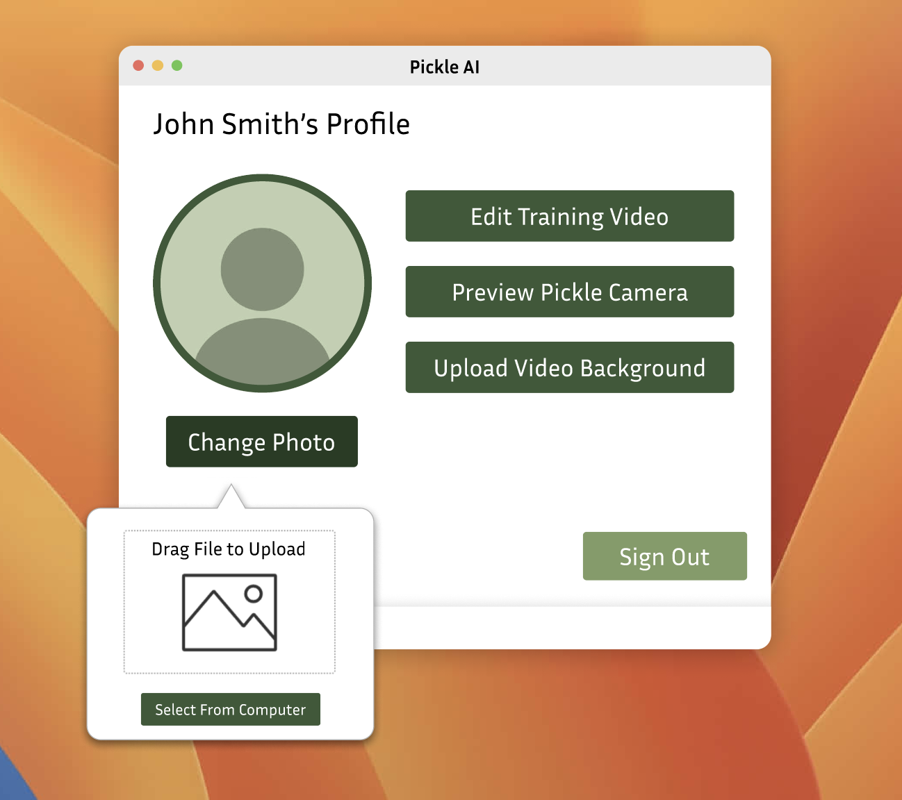
-
We added a training video screen and took inspiration from HireVue, a
platform that records users during job interview simulations, for the
video training screen. We liked how HireVue seamlessly integrated clear
on-screen instructions alongside a live camera feed. This dual focus of
guiding the user while capturing a real time video is central to Pickle
AI's functionality as well.
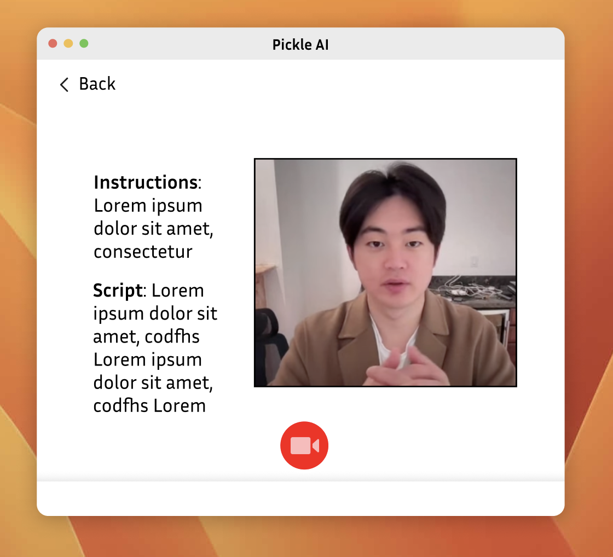
-
Our final major edit was adding a preview video screen that would show
the side by side cameras, alongside a settings tab with sliders as
suggested.
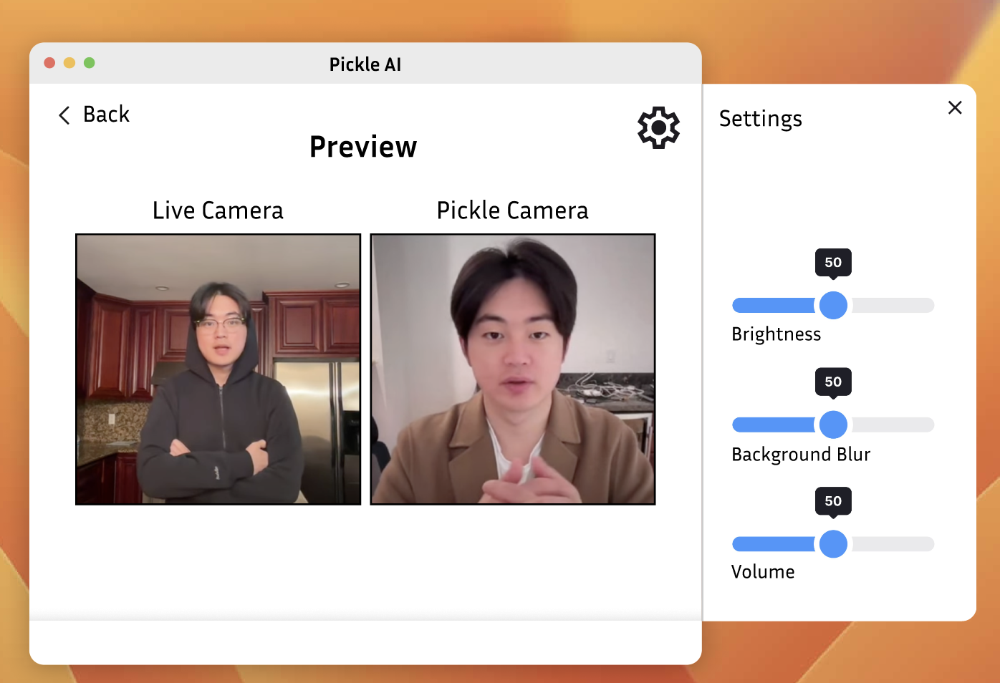
To ensure visual consistency and clarity throughout the hi-fi prototype,
we developed a simple design system to adhere to. Our goal was to create
an interface that felt trustworthy for professional use, yet light enough
to lower the intimidation factor of training an AI body double.
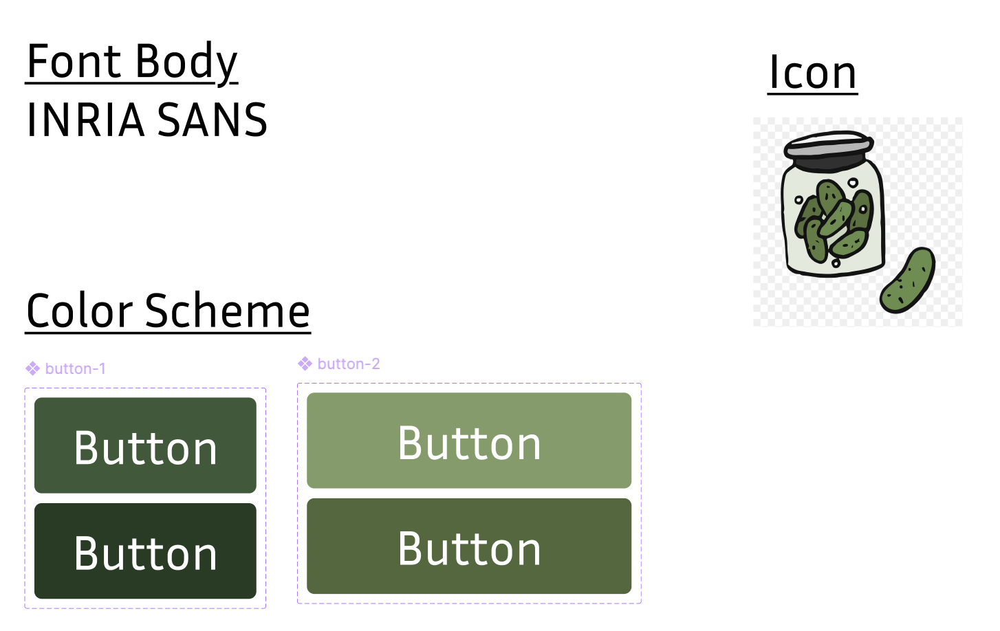
- We chose INRIA Sans for its clean, rounded geometry
-
The color palette revolves around a spectrum of greens chosen to
reference the product name. The darker green was used for primary calls
to action as it had a greater contrast with the white background, and
the lighter shades indicated secondary actions.
You can view the full flow below:
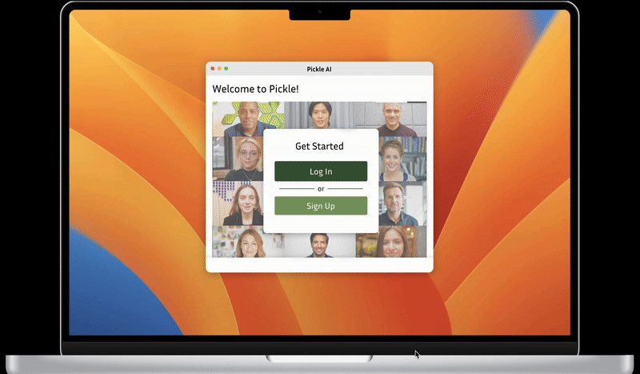
Our final prototype can be found in the Figma linked below:
https://www.figma.com/design/vIS6ebSH4Lk8odbQJ9lyLf/pickle-cs1300-thing?node-id=0-1&t=3qFxMx4yb8BHPvIk-1
You can also view a live demo of our Hi-Fi alongside further explanations
of our design choices in this loom video:
https://www.loom.com/share/2a92683908d646428c11e1ad9183dba7?sid=86559f3d-4dee-4adb-941c-b422a26e6a29
User Testing
In order to ensure our flow made sense and was easily understood by new
users, we conducted a few usability tests.
Queries:
-
If the sign in screen's background had animations of people using
pickle, would you stay on the screen longer?
-
All users indicated that they would prefer animated demos of the
product on the login/signup screen, and that they would stay longer,
about 5 seconds more on average. They liked that they could gauge
how realistic the product was on the first screen they saw. Many of
the users agreed that convenience and simplicity are key for this
type of product.
-
Would you change the wording on any of the buttons to make them more
intuitive?
-
Three of the users agreed that the "Edit Training Video" button's
wording can be changed. Suggestions included "Train Your Pickle
Avatar" and "Record Training Video". The main sentiment was that the
word edit implied they were changing a video that already existed,
even though it was their first time using the product.
-
Do you think instructions are necessary for the face scan portion? Or do
you feel you would be able to complete the task without them?
-
All users said that they were familiar with the face scanning
process from setting up facial recognition on their phones, so a
simple line of text telling them to read the script was sufficient.
Multiple users suggested multiple stages of reading short sentences
that were easily memorized, to ensure they could look at the camera
while speaking instead of reading a single long script.
-
Were there any points in the process where you were uncertain about how
to proceed?
-
Most users said they were a bit confused after recording themselves.
They appreciated the training progress screen, but after it
disappeared and they clicked back to the home screen, there wasn't
much indication that the model was successfully loaded. Many of them
ended by questioning whether or not they had completed the required
task.
If we had more time
-
We built the prototype for the app where the configuration process is
done, we would add more user flows like the app when it is an overlay on
Zoom.
-
For this project, since the functionality was centered around the video
training, we decided to ignore flows for things such as the login
screen. Given more time, we'd like to go back and flesh those out as
well.
Final Thoughts
We thoroughly enjoyed this exercise of researching Pickle AI. We loved
being able to brainstorm ideas, so we could create an experience that was
both simple and enjoyable for anyone who was using this software on a
video call. It was interesting to see all the varying opinions when we
gave our product for real life people to use. We learned that creating an
experience isn't as straightforward as it may seem, but that people can
surprise you. Overall we loved the opportunity we had to create something
and recreate it iteratively, so we could fine tune it into something that
approximates to our goals.